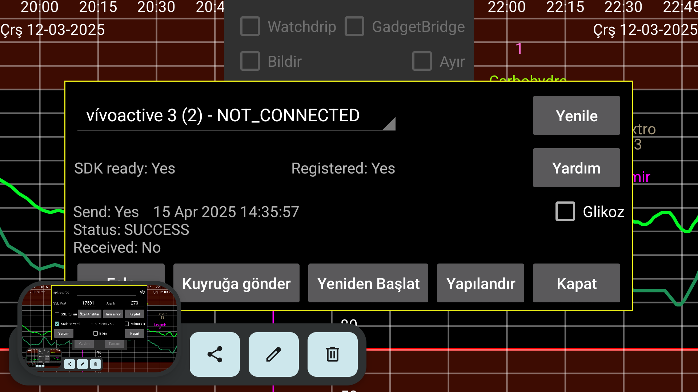

Kerfstok (https://apps.garmin.com/en-US/apps/b6348ccc-86d8-4780-8013-d9e1 9fed5260 (ayrica bakiniz https://www.juggluco .nl/Kerfstok/index.html) Kerfstok, dokunmatik ekranli programlanabilir Garmin akilli saatler için bir saat uygulamasidir. Kerfstok'un asagidaki kullanimlari vardir:
Sayilari girin ve bunlari Juggluco ile degistirin;
Juggluco'dan alinan akis glikoz degerini görüntüler;
Spor sirasinda bu glikoz degerini görüntülerken, ayni zamanda hiz ve mesafeyi de gösterir. Aktivite kaydedilecek ve Garmin'in connect uygulamasinda görüntülenebilecektir.
Bu saat uygulamasi Bluetooth araciligiyla Juggluco ile baglanti kurarak miktarlari degistirebilir ve sürekli olarak güncel glikoz degerinizi görüntüleyebilir.
SORUN GIDERME:
Ilk olarak, saatinizin adi "CONNECTED" olarak gösterilmelidir. Gösterilmiyorsa, Garmin'in Connect uygulamasindaki sorunu çözün. Ikinci olarak, saatinizde Kerfstok baslatilmalidir.
Bazen saat ile telefon arasindaki baglanti kesilebiliyor.
Gönderme durumu FAILURE_DURING_TRANSFER ise, asagidakilerden birini veya hepsini yapabilirsiniz:
-Bluetooth'u kapatip açin ve ardindan Yeniden Baslat'a basin;
- Saati yeniden baslatin (neredeyse her zaman ise yarar, ancak bazen birkaç kez yapilmasi gerekir);
- Telefonu yeniden baslatin (son seçenek).
Diger sorunlar için Garmin connect uygulamasini zorla durdurup, tekrar baslatarak "yeniden baslat" tusuna basmak ise yarayabilir.
Uygun bir baglanti varsa ve herhangi bir nedenle saat ve telefondaki miktarlar senkronize degilse, Senkronize Et dügmesine basarak henüz göndermedikleri degerleri birbirlerine göndermelerini saglayabilirsiniz.
Bazen "Gönderme Kuyrugu " adli bir dügme gösterilir; bu, henüz saate gönderilmemis mesajlar oldugu anlamina gelir. Normalde bunlar zamaninda otomatik olarak gönderilir, ancak bazen bu kesintiye ugrar ve Gönderme kuyrugu'na basmak göndermeyi devam ettirir. Ancak, baglantinin kopmasi nedeniyle gönderilmemisse bunun çok az faydasi olur. Devam eden bir islem sirasinda Gönderme Kuyrugu'na basmak baglantiyi kesebilir.
Bazen "Gönderme kuyrugu" gösterildiginde, mesajlarin yalnizca telefondan saate gönderilmesine ancak diger yöne gönderilmemesine neden olan bir baglanti sorunu vardir. Bu, "Receive" sonraki zamanin "Send" sonraki zamandan daha eski oldugu durumdur. Bunu düzeltmek için, asagidakilerin bir veya hepsini bir veya birden fazla kez tekrar yapmaniz gerekir:
Yeniden Baslat'a basin;
Zorla durdurun, Garmin Connect uygulamasini tekrar baslatin ve ardindan Yeniden Baslat'a basin;
Bluetooth'u kapatip açin;
Saati yeniden baslat;
Telefonu yeniden baslatin.
Yenile bu diyalogu yeni bilgilerle yeniden yazar (örnegin Yeniden Baslat veya Sync'ten sonra).
"Glikoz"'u kontrol etmek, glikoz degerlerinin saate gönderilip gönderilmeyecegini belirler.
Config : Karanlik modu, Kisayollari ve Kimligi ayarlayin.
UYARI: Juggluco sadece bir Kerfstok ile kullanilabilir. Juggluco'yu Kerfstok'a birden fazla saate veya hem saate hem bilgisayara ayni anda baglayamazsiniz.